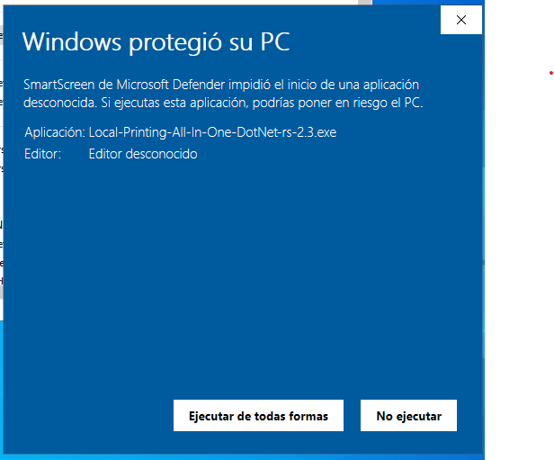
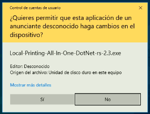
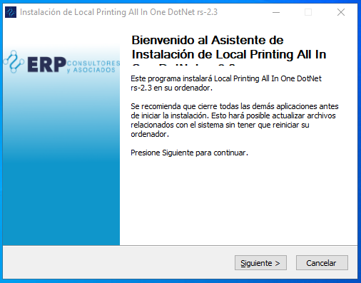
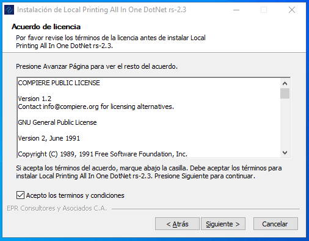
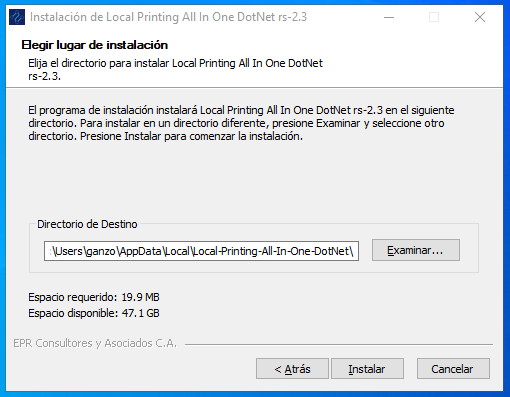
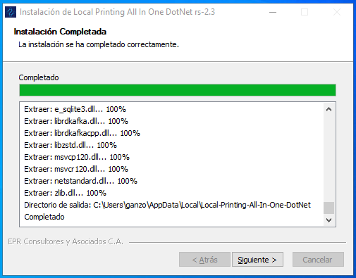
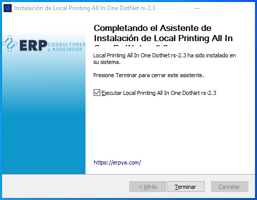
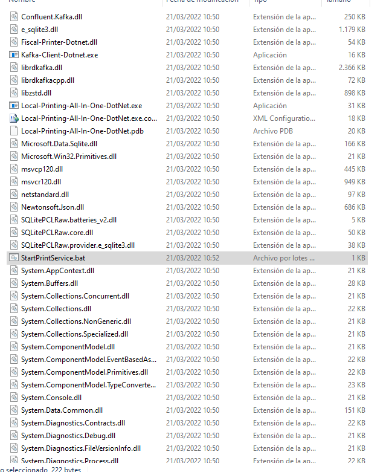

Instalar Cliente de Impresión Todo en Uno (Local-Printing-All-In-One-DotNet)
Esta herramienta permite controlar la impresora fiscal The Factory HKA 80, ademas de Imprimir PDF desde ADempiere usando la impresora predeterminada.
Requisitos
Sistema operativo Windows 10
Acrobat Reader DC (Indispensable para impresión de PDF) como alternativa se puede usar Foxit PDF Reader
Establecer Acrobat Reader DC como aplicación predeterminada para Documentos PDF
Instalación
Ejecute el archivo Local-Printing-All-In-One-DotNet.exe y siga los siguientes pasos:
Interfaz de inicio de instalación
Para efectos demostrativos se instala la versión de Local-Printing-All-In-One-DotNet-rs-2.3
Ejecutar Instalador

Permisos de Instalación

Ventana de Bienvenida

Licencia de la aplicación

Ruta de Instalación
La aplicación se instala por defecto en la siguiente ubicación:
C:\Users\(Usuario de Windows)\AppData\Local\Local-Printing-All-In-One-DotNet\

Progreso Instalación

Finalizar Instalación

Icono creado en el Escritorio de Windows.

Configurar la aplicación para Imprimir
La aplicaión se configura en dos etapas la primera en el servicio de ADempiere y la segunda comprende a actualizar los datos de la apliación instalada, Siendo el orden el que se muestra a continuación.
Problemas luego instalar
En Caso de que no se cree el icono en el escritorio luego de instalar, se debe verificar si el usuario con el que se realizo la Instalación tiene permisologia de Administrador.
Se deben seguir los siguientes pasos:
Verificar que este creada la siguiente Ruta: **C:Users(Usuario de Windows)AppDataLocalLocal-Printing-All-In-One-DotNet** y a su vez en dicha ubicación existan los siguientes directorios:

Debe Existir la carpeta resources y una carpeta que en su nombre incluya las siguientes siglas rs- (Ej. rs-2.3)
Si el directorio existe se debe ingresar a la carpeta rs-x.x y ubicar el archivo StartPrintService.bat, y proceder a crear un acceso directo en el escritorio de ese archivo.
